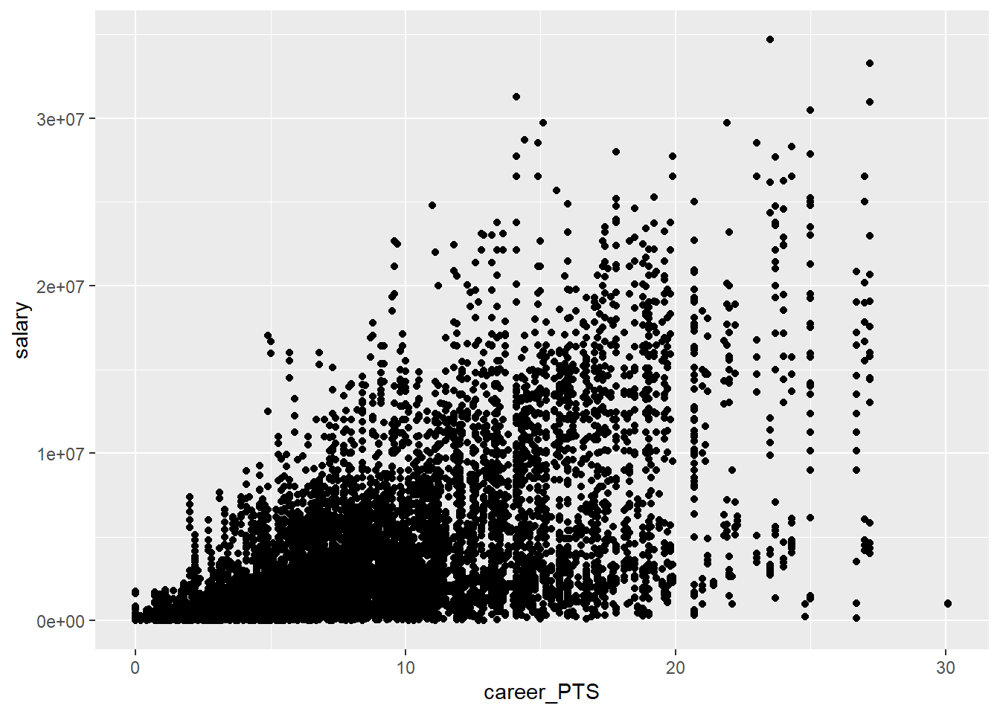
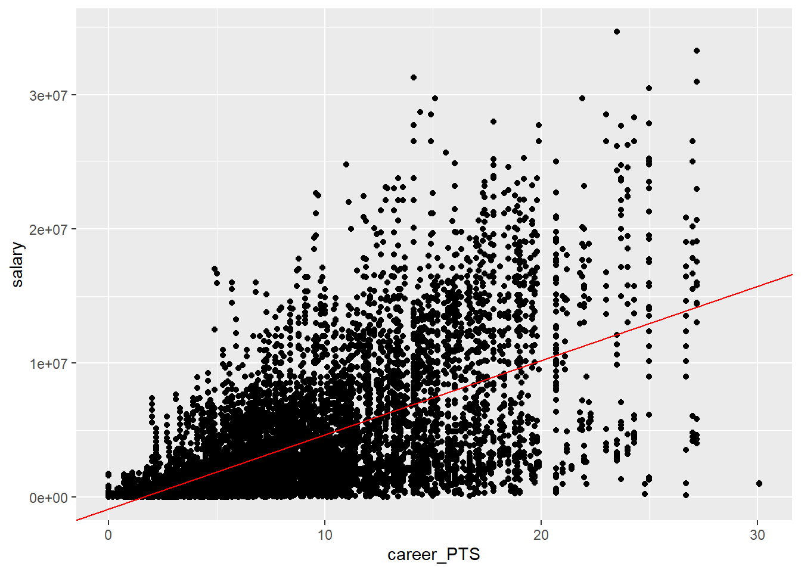
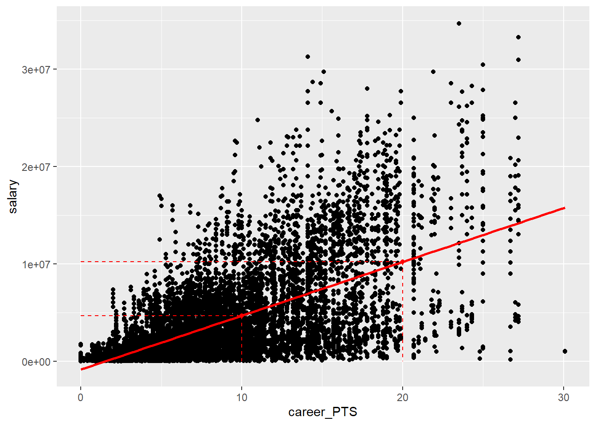
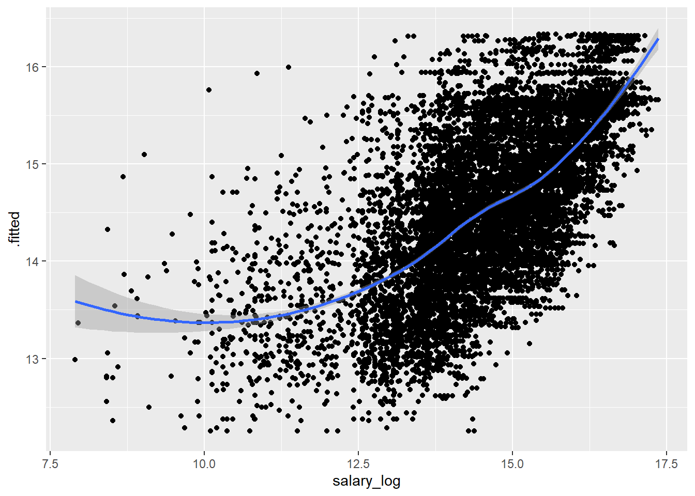
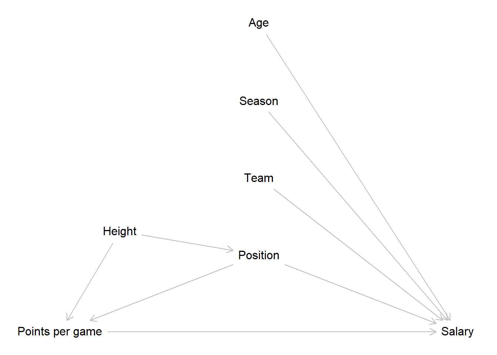

10 Prediction
In prior weeks, you learned how to build a linear regression model. The main interest we pursued so far was to arrive at an unbiased estimate for the effect of one independent variable (in our case the average points a NBA player scored per game) on an outcome (here the salary of NBA players). With the help of a DAG, we identified relevant variables we have to include in our model, and ones we are not allowed to include, to “isolate’ the effect of points as much as possible and reduce bias. All what we have done so far can be considered part of classical statistical inference, i.e.understanding why an outcome varies and what the magnitude and direction of effects is. This is one approach to modelling.
Another approach is predicition. In this scenario, we build regression models (or other models) solely to predict an outcome to the highest accuracy. The main interest is not to learn more about how the outcome can be explained but to predict something which we are interested in. Making predictions based on a computed model is hardly new, still it lies at the heart of more modern approaches to analysing data, i.e. “data science” and “machine learning”. We will return to the latter next week.
In this week we will focus on how to predict values based on a linear regression model, like the ones we have computed so far.
10.1 Objectives
- Making predictions using a linear regression model
- Assessing the quality of the predictions
- Predicting the outcome for hypothetical cases
10.2 R functions covered this week
- Making predictions
predict(): Base R function used to make predictions from a fitted model object. It takes a model object and a new data frame that contains the values of the independent variables for which predictions are desired. It returns a vector of predicted values for the dependent variable. Optionally it can also return confidence and prediction intervals.augment(): Function from thebroompackage. It is used to add columns with predictions, residuals, and other information to the original data frame. It takes a model object and an optional new data frame for prediction. It returns a tibble with one row per observation and one column per variable or statistic. Optionally it can also return confidence and prediction intervals.
- Assessing the quality of predictions
mse(): Function from theMetricspackage. It is used to compute the mean squared error (MSE), the average of the squared differences between predicted and actual values.rmse(): Function from theMetricspackage. It is used to compute the root mean squared error (RMSE), the root of the MSE. This gives us the average difference between predicted and actual values on the original scale of the outcome variable, which is easier to interpret.
bind_cols(): Adplyrfunction that adds additional columns to an existing tibble. Used here to add predictions and confidence/prediction intervals to a tiblle containing hypothetical cases we want to predict for.- New
ggplot()geomsgeom_abline()&geom_segment()
10.3 Making predictions
So far we have been using an x-centered approach. We were focused on understanding how an independent variable affects a dependent variable. Let us reconsider the formula used for estimation in a simple linear regression from session 5:
\[\hat{y} = b_0 +b_1*x_1\]
Our goal was estimating \(b_0\) and especially \(b_1\) in a way that describes the relationship between the x- and y-variables with the least error. Here we were centered on \(x\) because our main interest was understanding how the \(x\) variable influences the outcome \(y\) as expressed by the coefficient \(b_1\).
Moving on to prediction, the formula for a linear regression stays the same. We also still have one or multiple independent x-variables and their associated coefficients in our model, but they are now more of a means to an end. The end being predicting the outcome \(y\) or to be more precise our estimate \(\hat{y}\) to the highest accuracy. These approaches are therefore also called y-centered.
So how can we make predictions based on a linear regression model? Luckily this is very straightforward as we already know all the moving parts we need from our session on linear regression. Remember that linear regression is all about finding a straight line through a cloud of points that describes the relationship between two or more variables with as little error as possible. The line will have an an intercept, i.e. the value of \(y\) when \(x = 0\), \(b_0\) in our formula, and a slope, \(b_1\). The latter describes the change in \(y\) for an increase of one unit in \(x\).
10.3.1 Simple linear regression
For this to make sense, let us return to our NBA data.
The simplest model we came up with was regressing salary on career_PTS.
Let us plot this relationship once again.

When we estimated our first regression, the goal was to find the one line that describes the relationship between both variables with as little error as possible.
##
## Call:
## lm(formula = salary ~ career_PTS, data = data_nba)
##
## Residuals:
## Min 1Q Median 3Q Max
## -14788659 -2023969 -434599 1311807 24326060
##
## Coefficients:
## Estimate Std. Error t value Pr(>|t|)
## (Intercept) -851915 76417 -11.15 <2e-16 ***
## career_PTS 552843 7453 74.17 <2e-16 ***
## ---
## Signif. codes: 0 '***' 0.001 '**' 0.01 '*' 0.05 '.' 0.1 ' ' 1
##
## Residual standard error: 3732000 on 9726 degrees of freedom
## Multiple R-squared: 0.3613, Adjusted R-squared: 0.3612
## F-statistic: 5502 on 1 and 9726 DF, p-value: < 2.2e-16The intercept, \(b_0\), and the coefficient for our sole independent variable, \(b_1\), are the parameters needed to draw this one line, our best fit. We can easily add the regression line to the plot using the values provided in the model summary.
data_nba %>%
ggplot(aes(x = career_PTS, y = salary)) +
geom_point() +
geom_abline(intercept = -851914, slope = 552843, colour = "red")
How is this line drawn? All we did was plugging in the values for the intercept and the coefficient into our formula:
\[\hat{y} = -851914 + 552843 * x_1\]
For every \(x\) value, the formula describes the corresponding \(y\) value. For example, we can compute the \(y\) values our model assumes for \(x = 10\) and \(x = 20\).
## [1] 4676516## [1] 10204946We can also visualise these points in our plot. Note that here we used
geom_smooth(method = "lm") to draw the regression line for us. What this
function does is to compute a linear regression for the two variables in the
background and then draw the corresponding regression line.
data_nba %>%
ggplot(aes(x = career_PTS, y = salary)) +
geom_point() +
geom_smooth(method = "lm", se = FALSE, colour = "red") +
geom_segment(x = 10, y = 4676516, xend = 10, yend = 0, linetype = 2, colour = "red") +
geom_segment(x = 0, y = 4676516, xend = 10, yend = 4676516, linetype = 2, colour = "red") +
geom_point(x = 10, y = 4676516, colour = "red") +
geom_segment(x = 20, y = 10204946, xend = 20, yend = 0, linetype = 2, colour = "red") +
geom_segment(x = 0, y = 10204946, xend = 20, yend = 10204946, linetype = 2, colour = "red") +
geom_point(x = 20, y = 10204946, colour = "red")
The two marked points are the \(y\) values our model estimates for \(x = 10\) and \(x = 20\) respectively. These are the \(y\) values the model predicts for specific values of \(x\). We were already predicting above; predicting the salary for a player that scores \(10\) or \(20\) points per game on average. This is what prediction with a linear regression model comes down to, the value of \(y\) the model estimates for any given value of \(x\).
You can see in the plot that both predictions fall exactly on the regression line and the same would be true for any other value of \(x\) we plug into the formula. That is because the regression line represents all the knowledge about the relationship between \(x\) and \(y\) the model possesses. It assumes that for an increase in points per game of \(1\), the salary increases by \(552843\).
But we can also see that most of the actual data points do not fall exactly on the regression line. This is the error inherent to our model. The line was chosen in a way to minimise this error but it still persists. This also means that all our predictions will have a potential error. Not every player that scores \(10\) points per game will actually earn \(4,676,516\$\). As we can see in the plot, many earn way more and many less than the predicted value.
This is what this session will be about, optimising our model to decrease the error and thus make more accurate predictions for our outcome.
10.3.2 Why predict at all?
Now you may rightfully ask: “Why do we want to predict salaries if we already know the actual salaries!?” Fair point. Prediction is commonly used to predict values which we do not know.
Imagine there are some players that do not report their salaries. We could predict their salaries based on what we know from players who are similar to them in other observable characteristics, like the points scored per game above. This can be helpful to fill in missing values in our data.
Or imagine we want to predict the salary of a hypothetical player that does not exist. We can basically invent this player by setting other variables included in the model to values that we see fit and receive a prediction for the salary received. We can even invent multiple players, systemically varying variables of interest and compare the predictions. Here you can see how it could get scientifically interesting. We could for example systematically vary the ethnic background of fictitious NBA players to assess any race related pay gaps. While this question sounds interesting, remember that we can only use variables that were in the data used to compute the model. The model simply does not know what effect the ethnic background has on the salary, as no data was presented to it to estimate the relationship.
Prediction could also be used for more practical purposes. A player could use prediction to assess how much they could or should earn, if they increases their performance to certain values; maybe to strengthen their position in future contract negotiations. Sports analysts could also use predictions to forecast how much a player will make next year, depending on their performance in the current season.
In the end it comes down to the research question. If we are interested in the effect one or several \(x\) variables have on the outcome, we should use regression to estimate the effects with as little bias as possible. If we are interested in the value a \(y\) variable will have for certain sets of \(x\) values, we should use regression to predict the value of \(y\) with the highest accuracy possible. But this is no afterthought. We have to know what we are interested in to design the model in the correct way. As we will see below, the best model used for estimation is not necessarily the best model for prediction, and vice versa.
10.4 Making better predictions
When we worked with the NBA data the last time we have already moved beyond a simple linear regression, as our DAG led us to conclude that we also have to include the position a player is occupying to receive an unbiased estimate for the effect of points on salary. Maybe this model could also make better predictions compared to the simple regression.
Let us rerun the model and save it further analysis. As we had transformed our outcome variable using a logarithmus naturalis, we should this again.
data_nba <- data_nba %>%
mutate(salary_log = log(salary))
m1 <- lm(salary_log ~ career_PTS + I(career_PTS^2) +
position_center + position_sf + position_pf + position_sg + position_pg,
data = data_nba)We now could start plugging in some \(x\) values into our formula and using the coefficients computed in the model to predict some \(y\) values. Nothing is stopping us from doing so. In fact we have done so before. But there are more convenient ways to approach this.
We can for one extract the fitted values from our model object and add them to
the data. These fitted values are the \(y\) values the model estimated for each
observation; the values falling on the regression line the model assumed as the
best fit. They are saved as a variable in the model object and can be extracted
with the syntax model$fitted.values. When we add them to our original data,
we can compare the actual salaries to the predicted ones. As we have used a
logarithmic transformation on our outcome, the predicted values will also be on
a lograithmic scale. To make the values interpretable, we should reverse this
transformation.
data_nba$predicted_values_m1 <- m1$fitted.values
data_nba %>%
mutate(predicted_values_m1 = exp(predicted_values_m1)) %>%
select(id, name, salary, predicted_values_m1, season_start) %>%
head(20)## # A tibble: 20 × 5
## id name salary predicted_values_m1 season_start
## <chr> <chr> <dbl> <dbl> <dbl>
## 1 abdulma02 Mahmoud Abdul-Rauf 798500 4480779. 2000
## 2 abdulta01 Tariq Abdul-Wahad 1411000 1546827. 1998
## 3 abdulta01 Tariq Abdul-Wahad 1594920 1546827. 1999
## 4 abdulta01 Tariq Abdul-Wahad 4500000 1546827. 2000
## 5 abdulta01 Tariq Abdul-Wahad 5062500 1546827. 2001
## 6 abdulta01 Tariq Abdul-Wahad 5625000 1546827. 2002
## 7 abdulta01 Tariq Abdul-Wahad 6187500 1546827. 2003
## 8 abdulta01 Tariq Abdul-Wahad 6750000 1546827. 2004
## 9 abdulta01 Tariq Abdul-Wahad 3656250 1546827. 2005
## 10 abdulta01 Tariq Abdul-Wahad 1968750 1546827. 2006
## 11 abdursh01 Shareef Abdur-Rahim 9000000 12377347. 1999
## 12 abdursh01 Shareef Abdur-Rahim 10130000 12377347. 2000
## 13 abdursh01 Shareef Abdur-Rahim 11250000 12377347. 2001
## 14 abdursh01 Shareef Abdur-Rahim 12375000 12377347. 2002
## 15 abdursh01 Shareef Abdur-Rahim 13500000 12377347. 2003
## 16 abdursh01 Shareef Abdur-Rahim 14625000 12377347. 2004
## 17 abdursh01 Shareef Abdur-Rahim 5000000 12377347. 2005
## 18 abdursh01 Shareef Abdur-Rahim 5400000 12377347. 2006
## 19 abdursh01 Shareef Abdur-Rahim 5800000 12377347. 2007
## 20 abdursh01 Shareef Abdur-Rahim 6600000 12377347. 2009Looking at these first \(20\) rows from the output points to two problems. The first one is that a single player gets the same predicted salary for each observation, i.e. each year that they played in the NBA. This is the case because the data on performance are career averages. We do not know how many points a player scored on average in a specific season, we only know how many they scored on average over their career. This is a limitation inherent to our data that we can not solve here completely. One way to address this at least partially, is to add variables which may explain the variation of salaries over a career. We would still prefer performance data by season, but we have to accept that we are right now trying to predict accurate salaries from data that combines season- and career-specific variables. This has to be kept in mind when assessing the quality of all our models.
The second problem is that the predicted values are way off for most observations. We can not conclude the overall error of our model, more on that below, by looking at a few observations, but at least the first 20 point to very inaccurate predictions. We may need further variables in our model to increase the quality of predictions.
Like for every R problem, there are multiple alternatives to doing it the base R
way, implemented in the many available packages. This is of course also true for
plucking fitted values and other model related values out of a model object.
One alternative, and more tidyversy, way is to use augment() from broom.
augment() takes all observation related values, including the fitted values,
from the model object and presents them as a tibble. If we add the optional
argument data = ..., we can specify the tibble containing the actual data
and have augment() add the values from the model to it.
The resulting tibble can be used as above. Remember that we still have to retransform the predicted values for salary if we want to see the actual dollars paid.
To get a better idea of the quality of our predictions, we can plot the actual versus the predicted values. If we made perfect predictions, all data points should lie perfectly on the diagonal. The more they dispersed around it, the further off our predictions were.
data_nba_m1 %>%
ggplot(aes(x = salary_log, y = .fitted)) +
geom_point() +
geom_smooth(method = "loess")
We can see that for most data points there is a clear difference between the predicted and the actual values. May be we should try to improve our model, before moving on.
10.5 Making even better predictions?
From our DAG we concluded that the variables used in m1 are the correct
adjustment set to estimate the effect from points per game on salary. But there
the goal was just that, estimation of an effect. Now the goal has changed. We
want to make accurate predictions and thus we should reconsider our decisions.
There may be further variables of which we think that they explain a part of the
variation in salaries. The better we can capture variation in salaries between
players, and thus by the values of their variables, the more precise our
prediction will be.
Let us return to our DAG.

For estimation we concluded that we only have to include the position besides the points per game. This was correct, but for prediction we want to consider all the other factors that have an effect on salary. Different teams may be ably to pay different salaries, so this should be included. There may also be a general increase of wages over time, so we should include a variable on the season an observation, and thus their salary, was recorded in. We also added an age variable to the DAG. This was not present before, but should also have an impact on the salary as it represents the time a player has already spent playing and thus their experience.
We can now run a new model including these additional variables. We also
construct a new object holding the original data and the predictions made by
m2.
m2 <- lm(salary_log ~ career_PTS + I(career_PTS^2) +
position_center + position_sf + position_pf + position_sg + position_pg +
age + team + season_start,
data = data_nba)
data_nba_m2 <- augment(m2, data = data_nba)Does this model make better predictions compared to m1? To assess this we have
to look at techniques to actually compare two models to each other.
10.5.1 Comparing models
There are multiple approaches to comparing the accuracy of linear regression models, two of which we will address here.
One approach is already familiar to you: comparing the \(R^2\) values. If you remember session 7, this measures how much of the variation in the outcome can be explained by our set of independent variables.
We can of course access the values by using summary(), but glance() may be
more convenient here, as we do not want to see all coefficients but only the
model fit statistics.
## # A tibble: 1 × 12
## r.squared adj.r.squared sigma statistic p.value df logLik AIC BIC
## <dbl> <dbl> <dbl> <dbl> <dbl> <dbl> <dbl> <dbl> <dbl>
## 1 0.398 0.397 1.04 917. 0 7 -14172. 28363. 28428.
## # ℹ 3 more variables: deviance <dbl>, df.residual <int>, nobs <int>## # A tibble: 1 × 12
## r.squared adj.r.squared sigma statistic p.value df logLik AIC BIC
## <dbl> <dbl> <dbl> <dbl> <dbl> <dbl> <dbl> <dbl> <dbl>
## 1 0.428 0.426 1.01 165. 0 44 -13921. 27934. 28264.
## # ℹ 3 more variables: deviance <dbl>, df.residual <int>, nobs <int>We can see the \(R^2\) actually increased, but not by that much. While m1 was
able to explain about \(39.8\%\) of the variation in salaries, m2 can explain
about \(42.8\%\), an increase of \(3\%\). While the increase is small, the \(R^2\)
indicates that m2 will be able to make somewhat better predictions compared to
m1.
An additional common measure for comparing linear regression models is the mean squared error (MSE). The MSE represents the average error of our predictions compared to their actual values, quantifying the discrepancy between the model’s predictions and the true observations. The larger the differences are on average, the larger the MSE will be, thus a lower value is actually better.
We can use mse() from the Metrics package to compute the MSE. All we have to
do is first indicate the predicted and second the actual values in our data as
arguments.
## [1] 1.078827## [1] 1.024443In computing the MSE, the square of the differences between predicted and actual values is used in computing the mean. Without going into the reasons, this makes sense mathematically. The only problem is, that the resulting measure is not as readily interpretable anymore. We can solve this by using the root mean squared error (RMSE) instead. This is just the square root of the MSE but it presents us a measure that is interpretable in units of the outcome variable.
We can use rmse from Metrics to do just that. As we had logarithmised our
outcome and thus our predictions are as well, we should construct a variable
that reverses the transformation for the predicted values and compare it to the
untransformed salaries. If we do not, the RMSE will still be hardly
interpretable as we are comparing two logarithms to each other, which is not
very helpful.
data_nba_m1 <- data_nba_m1 %>%
mutate(predicted = exp(.fitted))
data_nba_m2 <- data_nba_m2 %>%
mutate(predicted = exp(.fitted))
rmse(data_nba_m1$predicted, data_nba_m1$salary)## [1] 3946193## [1] 3813271Both measures tell the same story, m2 performs somewhat better compared to
m2. THe RMSE can even tell us what “somewhat” means. Model 1 is on average
\(3,946,193\$\) off, model 2 \(3,813,271\$\). Using model 2, we make predictions
which are on average \(132,922\$\) less wrong, compared to model 1. This is nice,
but if we compare it to the overall RMSE of model 2, our predictions are still
substantially off.
We could try to improve our model by including further variables
that also explain parts of the variation of salary. We will keep this for the
next session on machine learning. For now we will accept the quality of
predictions we have gained and use the m2 to predict salaries for imaginary
NBA players.
10.6 Predicting hypotheticals
As we have stated in the beginning of this session, one usage we can get out of prediction is comparing the outcomes a model predicts for hypothetical observations. The advantage to comparing the predictions of actual observations is that we can systematically manipulate those variables of interest to us while keeping all others at the same value.
Before we were interested in the difference the point average and the position played make for the salary received. We can approach this by using predictions too. For this we will have to construct some hypothetical cases and enter their data into a new tibble or data frame. Let us once again compare centers and point guards who in this case score \(10\) or \(14\) points per game on average. The tibble has to include all the independent variables used in computing the model. So we decide to inspect the predictions for players that are 20 years of age and played for the New York Knicks in the season of 2017.
prediction.data <- tibble(
career_PTS = c(10, 14, 10, 14),
position_center = c(1, 1, 0, 0),
position_pg = c(0, 0, 1, 1),
position_sf = 0,
position_pf = 0,
position_sg = 0,
age = 20,
team = "New York Knicks",
season_start = 2017
)We can now use our model to make predictions for these imaginary players. What
salary can they expect based on their characteristics? To predict these values
we can use the base R function predict(). We have to supply it with the model
to be used as the first argument and with the new data as second. To make
sense of the predictions, we should again reverse the logarithmic
transformation.
prediction.data$predicted_values <- predict(m2,
prediction.data)
prediction.data %>%
mutate(predicted_values = exp(predicted_values)) %>%
select(position_center, position_pg, career_PTS, predicted_values)## # A tibble: 4 × 4
## position_center position_pg career_PTS predicted_values
## <dbl> <dbl> <dbl> <dbl>
## 1 1 0 10 4474038.
## 2 1 0 14 7674367.
## 3 0 1 10 2694957.
## 4 0 1 14 4622690.We can see that the model predicts a substantial salary increase for making two more baskets, i.e. 4 points, on average each game, for both guards and centers. We also see that this increase is even stepper for centers, who make more money given the same amount of points anyway.
10.6.1 Adressing uncertainty
As we have seen above and alluded to over the last weeks, our models always
have some amount of uncertainty. In fact we have seen that m2 still is
\(3,813,271\$\) off on average. Those are not peanuts. So what are our predictions
actually saying? That a center who scores \(10\) points per game, is 20 years
of age and plays for the Knicks in 2017 will most definitely make \(4,474,038\$\)?
No, this is just the best guess the model can make based on the data it has
seen. It will still be somewhat uncertain about the predicted values.
We can assess this by looking at the confidence and prediction intervals.
Confidence intervals basically tell you the following: “If we repeated our study on different samples of people many times, then \(95\%\) of confidence intervals would include the true mean population value.” This leaves \(5\%\) of repetitions where the confidecne intervals do not include the true value. If we are in the \(95\%\) or the \(5\%\) is unknown to us. But what we can say is that we are \(95\%\) confident that our confidence interval includes the true mean value. In practice the confidence interval tells us the range of values for which we have this confidence of \(95\%\), without knowing if our interval actually includes the true mean value.
We can instruct predict() to return the confidence intervals for our
predictions by adding the argument interval = "confidence". In this code we
use bind_cols() to add the confidence intervals and predicted values to our
new data. We then reverse the logarithmic transformation for all 3 values to
be more interpretable.
prediction.data %>%
bind_cols(predict(m2, prediction.data, interval = "confidence")) %>%
mutate(predicted_values = exp(fit)) %>%
mutate(ci_lwr = exp(lwr)) %>%
mutate(ci_upr = exp(upr)) %>%
select(position_center, position_pg, career_PTS, predicted_values, ci_lwr, ci_upr)## # A tibble: 4 × 6
## position_center position_pg career_PTS predicted_values ci_lwr ci_upr
## <dbl> <dbl> <dbl> <dbl> <dbl> <dbl>
## 1 1 0 10 4474038. 3920882. 5105234.
## 2 1 0 14 7674367. 6711636. 8775195.
## 3 0 1 10 2694957. 2367270. 3068004.
## 4 0 1 14 4622690. 4054310. 5270750.We can see that the range of values for which we can be \(95\%\) confident that the true mean value is included differs by observation. For example, instead of stating that a center who scores \(10\) points per game, is 20 years of age and plays for the Knicks in 2017 will most definitely make \(4,474,038\$\) on average we would state that we are \(95\%\) confident that the true mean population value for such a player lies between \(3,920,882\$\) and \(5,105,234\$\).
But what confidence intervals present to us is the uncertainty around a mean value. We can be \(95\%\) confident that the true population mean for the described player lies between the lower and upper bounds of this interval. If we are more interested in the uncertainty of the specific predicted salary for our hypothetical player, we can use prediction intervals instead. These do not give us the confidence for the mean of all players with these characteristics but around the specific prediction we made for this one player, so for a specific value.
We can access prediction intervals with the same code as above, only changing
the argument to interval = "prediction".
prediction.data %>%
bind_cols(predict(m2, prediction.data, interval = "prediction")) %>%
mutate(predicted_values = exp(fit)) %>%
mutate(ci_lwr = exp(lwr)) %>%
mutate(ci_upr = exp(upr)) %>%
select(position_center, position_pg, career_PTS, predicted_values, ci_lwr, ci_upr)## # A tibble: 4 × 6
## position_center position_pg career_PTS predicted_values ci_lwr ci_upr
## <dbl> <dbl> <dbl> <dbl> <dbl> <dbl>
## 1 1 0 10 4474038. 609748. 32828335.
## 2 1 0 14 7674367. 1045764. 56318577.
## 3 0 1 10 2694957. 367341. 19771271.
## 4 0 1 14 4622690. 630040. 33917321.We can see that the prediction intervals are much, in our case very much, wider compared to the confidence intervals. The range were we expect, with \(95\%\) confidence, the true population mean to lie is much narrower than the range of salaries any individual player with the same characteristics can expect. Our model has a confidence of \(95\%\) that centers who scored \(10\) points per game, are \(20\) years of age and played for the Knicks in 2017 receive a salary between \(609,748\$\) and \(32,828,335\$\). That is quite the range.
What does this imply for our model and our quality of predictions? The confidence intervals tell us that we can be somewhat certain that we have a good measure of the mean value for all players with the characteristics we have defined, while the interval still indicates that our measure could be about \(500,000\$\) of in any direction. Our individual prediction for this specific hypothetical player on the other hand is very uncertain. The actual salary could be way lower and especially way higher than we have predicted. This indicates that our model is still not very good in making accurate predictions. We will address this and try to further improve our model when we turn to machine learning in the next session.
One last note on confidence and prediction intervals: That they are set to
\(95\%\) is a scientific convention. It is basically an arbitrarily chosen value
that many scientists agreed upon, at least in the social sciences. In some other
fields other thresholds are used, e.g. \(99\%\). We can tell predict() to
use a different threshold by adding the argument level = 0.99 with any
value of your choosing. Still, if you have no clear justification for using a
different value to \(95\%\), it makes sense to stick to the standard, as your
research will be more comparable to other research using the same threshold.
10.7 Further resources
- Linear Regression for Predictive Modeling in R - Dataquest: This is a blog post that explains how to use linear regression for predictive modeling in R, using the trees data set as an example. It covers how to fit, visualize, and evaluate linear regression models, as well as how to calculate confidence and prediction intervals.
- Predict in R: Model Predictions and Confidence Intervals - STHDA: This is a web page that shows how to use the predict() function in R to make predictions from a fitted model object. It also explains the difference between confidence intervals and prediction intervals, and how to calculate them using base R or the broom package.
- Mean Squared Error or R-Squared – Which one to use? - Analytics Yogi: A blog post that expands on using \(R^2\) and MSE for comparing the performance of linear regression models.